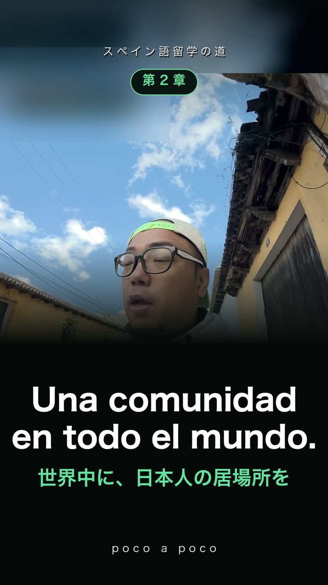
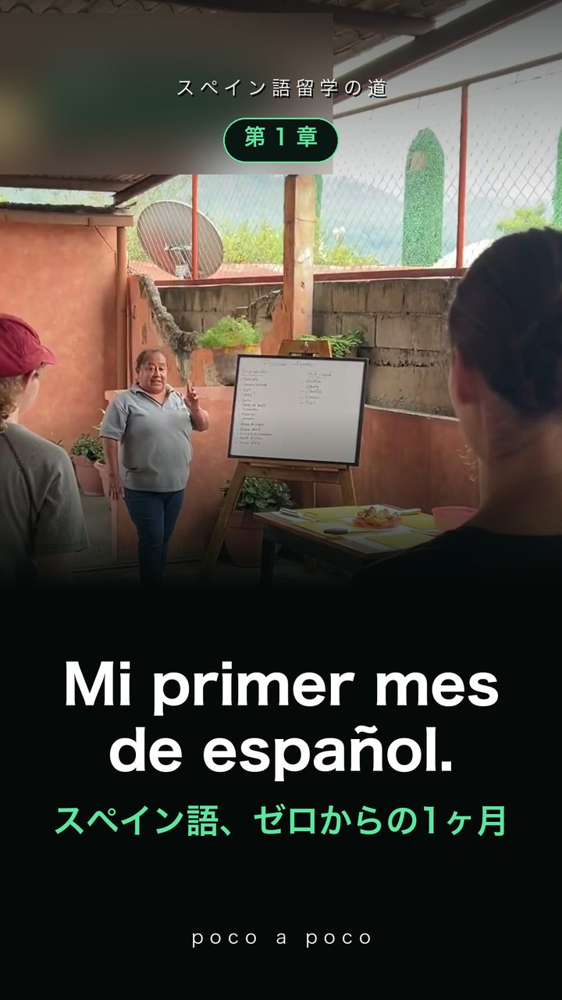
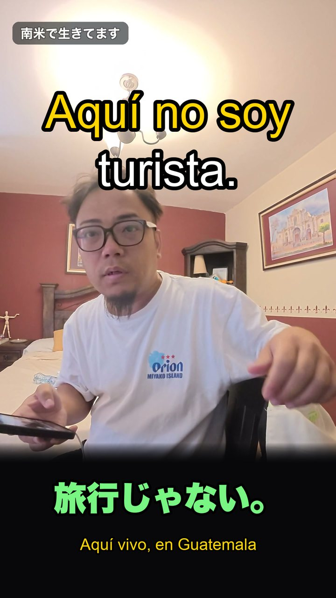
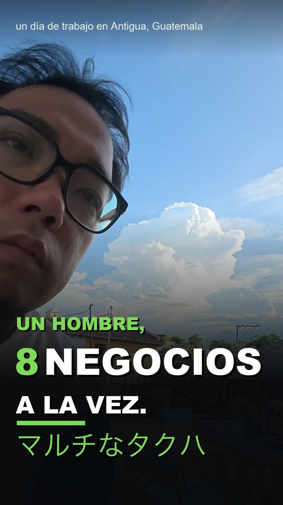
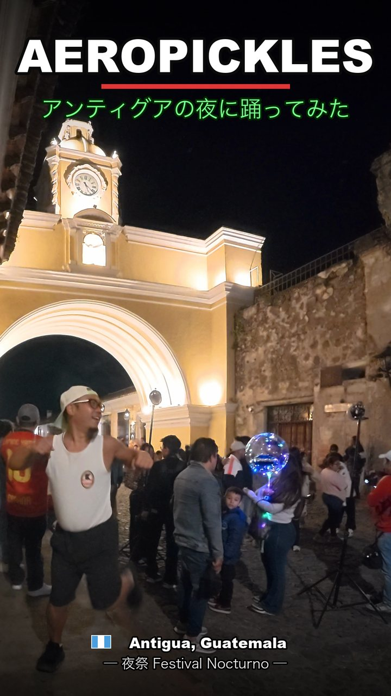
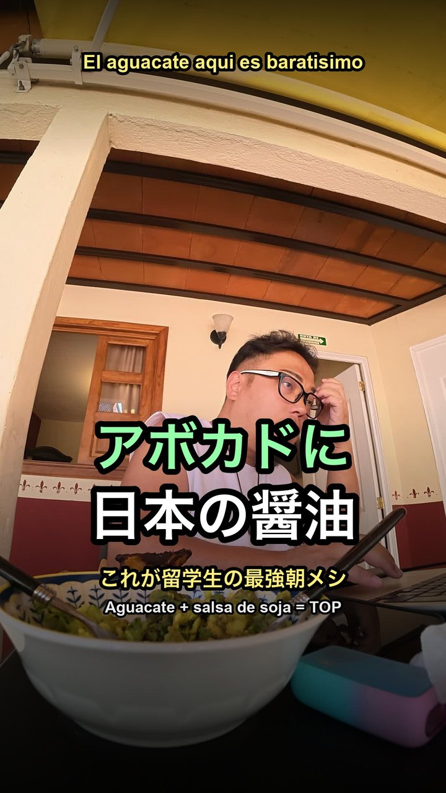
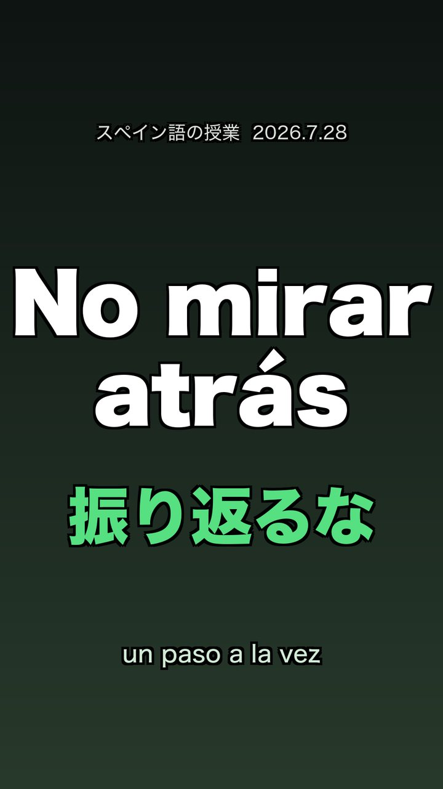
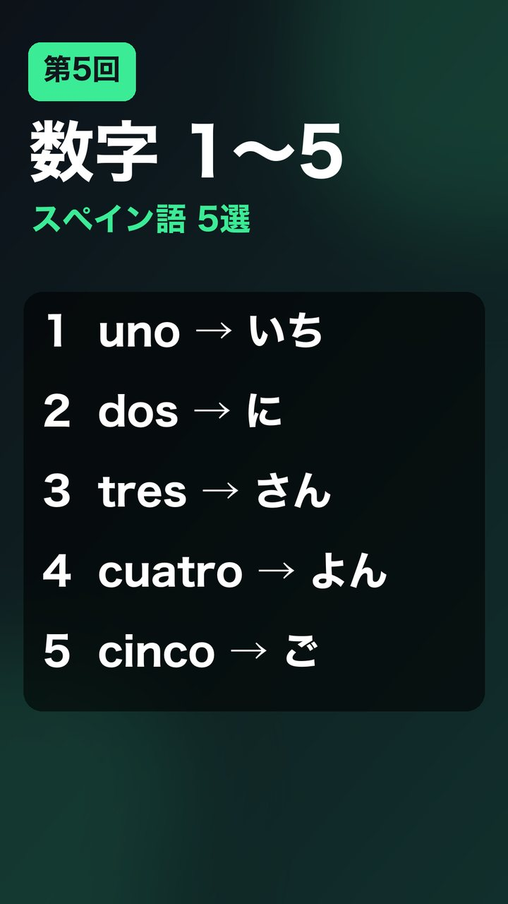

逃げた先が、スタート地点やった。
38歳・大阪出身。貯金なし、人脈なし、スペイン語なし。
それでも南米に来て、ゼロから生きてます。
大学も、会社員も、経営も、投資も、宗教も、全部やった。売上が数十億まで伸びた日も、日雇いで瓦を剥がしてた日もある。それでもどこにも答えはなかった。
大学は岡山県立大学の情報工学部、応用物理学研究室。やっていたのは第一原理計算 —— 量子力学の式から半導体のシリコンとゲルマニウムを解く計算やった。卒論は「SiO₂とGeO₂結晶の機械的性質に関する第一原理解析」、修論は「Ge酸化膜の機械的性質に関する研究」。情報工学部にいながら、扱っていたのは原子の並びやった。
たどり着いたのは、言葉も通じへん南米の地。ゼロから生き直してやっと分かった ——
答えは探すもんやない、作るもんやった。
いまはグアテマラ・アンティグアでスペイン語を学びながら、AI・IT・暗号通貨・海外移住サポート・ウォーターサーバー代理店、そして大阪でのしゃぶしゃぶ店まで。挑戦の過程を、失敗ごと全部カメラの前に置いています。








アスンシオンから始まった。詰まってたのは環境じゃない、まだ磨かれてない自分自身だった。どんな石も、磨けば光る。
石畳の街で語学学校へ。人生初のスペイン語の自己紹介で心臓がバクバクした。完璧じゃなくていい、poco a poco でいい。
10日前は完全なゼロ。AIを使って自分でアプリを開発した。この街を訪れる人の「最初の友だち」になる、無料の音声ガイド。
「このホームステイ、実家暮らしみたいやな」と思った瞬間、もう自分の部屋を借りて飛び出してた。学校でインプットするだけやなく、自分から動いてアウトプットする。
南米の日常をノンカットで。台本は作らない。挑戦のリアルな過程を、そのまま置いていく。
アグー豚のしゃぶしゃぶ。10月1日オープン。正直、自分が一番楽しみにしてるかも。
海外に出たい人が、着いた日から動ける。そのための拠点をカンボジアとパラグアイに置く。相談の窓口だけ日本にあっても、現地で詰まったら意味がない。
日本国内だけの話やない。世界に散っている日本人を集める。その第一歩が、世界中で店を出している日本人オーナーのラーメン屋をつなぐこと。
生きるとは、創ること。
仕事の相談・取材・留学の問い合わせは、ここから直接どうぞ。
SNS ／ ふだんの発信はこちら